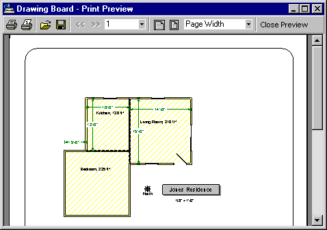
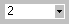
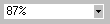

Print Preview Drawing (File Menu) |
  
|
Print Preview Drawing (File Menu) |
|
Icon:  . Keyboard Shortcut: ALT, F, W
. Keyboard Shortcut: ALT, F, W
Generates a Print Preview of the drawing being displayed in the current drawing window.

To Zoom In: Click the left mouse button or press +.
To Zoom Out: Click the right mouse button or press -.
To Scroll: Click and drag the left mouse button or press CTRL and any of the directional arrow keys or CTRL and the Page Up or Page Down keys.
Reselect Reports/Properties: Displays the Select Reports dialog, allowing you to change the list of selected reports or change any of the options such as fonts and colors, and then to regenerate the reports in the Print Preview window.
Refresh Reports: Recalculates the project and regenerates the reports, including any data that you may have changed in the project since the time that current set of reports were generated.
Print All: Prints all the pages of the report to your current printer. Displays a Print Setup dialog before printing.
Print Current Page: Prints only the current page of the report. Displays a Print Setup dialog before printing.
Open Report: Opens a previously saved report file with extension REP.
Save Report: Saves the current set of reports to a file with the extension REP.
Previous Page: Displays the previous page. Keyboard shortcut: PAGE UP
Next Page: Displays the next page. Keyboard shortcut: PAGE DOWN

Page Number: Displays or sets the current report page. You can go to another page in the list by typing in the page number or selecting one from the dropdown list.Zoom To Page Width: Sets the page zoom so that the width of the page just fits within the window. The zoom will remain at Page Width even as you resize the Print Preview window.
Zoom To Whole Page: Sets the page zoom so that the whole page just fits within the window. The zoom will remain at Whole Page even as you resize the Print Preview window.
Two Page: Sets the page zoom so that two whole pages will just fit within the drawing window. The zoom will remain at Two Page even as you resize the Print Preview window.
Thumbnail Sets the page zoom so that as many 1" wide thumbnail print preview pages are displayed as can be fit within the current window.

Zoom: Displays or sets the current page zoom. You can type in a custom zoom amount and press ENTER or select a zoom from the dropdown list.